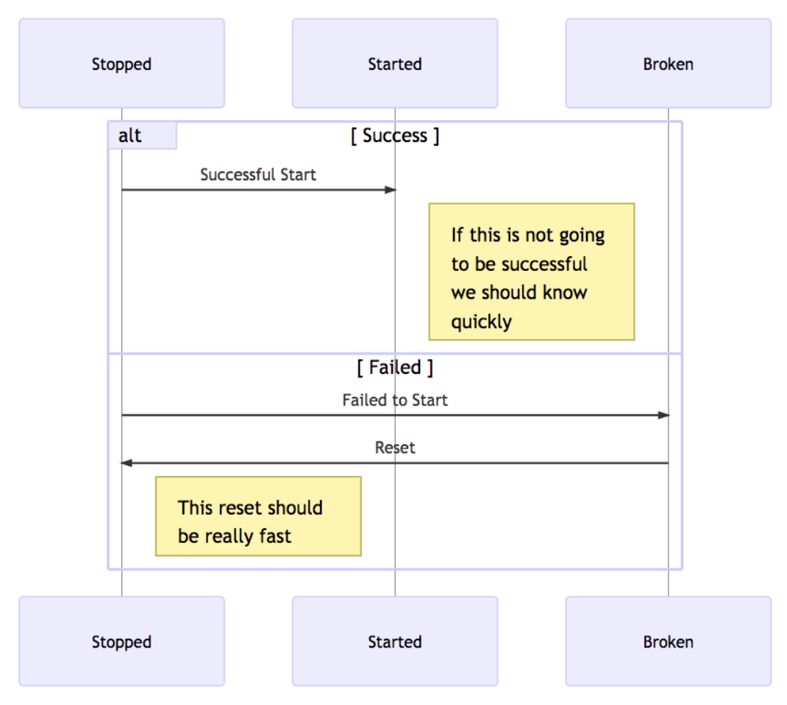

In a previous post, we discussed the systems we have had throughout the history of Shopify. In this follow up post we'll talk about the system we run today. Finally, we will have another post that includes a few forward thinking questions about developer operations at Shopify.
Dev
Dev is a command-line tool, mostly implemented in Ruby, with some shell integration supporting bash, zsh, and fish. It provides a set of commands to interact with the various projects under a GitHub account, including cloning, bootstrapping, running tests, booting servers, and shell integration to activate certain dependencies (e.g. particular Ruby, Go versions, or Node versions etc) when entering a project directory.
Almost all active projects at Shopify are dev-enabled. If a developer wants to start working on one of these projects, they need to run only one command, dev up, to completely setup and update their development environment for the project. This includes everything from installing XCode to running pending database migrations.
When we were making Dev, we had other previous tools in our recent memory. We looked at what we liked and what we didn’t. For example, we knew that a VM didn’t work well with code, but did with services which often caused the most issue. We created Railgun, an Xhyve based (https://github.com/mist64/xhyve) virtual machine that houses services such as MySQL, Redis, and Nginx. While creating a tool to interact with Railgun, we ended up developing Dev.
Core Philosophies
We decided on a few base philosophies from the beginning:
dev clone repo_name will clone the repository.
This will be our only interaction with Git as peoples’ flows vary, we want people to learn and remember Git, and cloning the repo allows us to control where repos are cloned and therefore lets us deterministically control the current directory
dev upwill setup all dependencies so that a project is able to rundev runordev serverwill run the required systems to make a project rundev cd [name]will change directory to a project- If nothing needs to be done,
dev upshould take under 1s and ideally under 100ms
These philosophies allowed us to maintain a great, consistent, and fast experience across all projects that specify a dev.yml
Dev.yml - the spec
dev.yml acts as a spec for a project. It defines what tasks need to be run during the up process and contains everything that dev needs to know about the project.
This is a segment of an example dev.yml file from a Ruby project:
# up hash defines the sequence of tasks
up:
- homebrew:
- shellcheck
- ruby: 2.4.1
- bundler
# list of command aliases
commands:
test: bin/testunit
style: "bundle exec rubocop ; find . -name '*.sh' | grep -vE 'chruby|nvm' | xargs shellcheck"
Running dev up in this project on a new machine will:
- Install homebrew
- Install shellcheck from homebrew
- Install ruby-install from homebrew (in the Ruby task)
- Install ruby 2.4.1 using ruby-install and a pre-compiled binary
- Activate ruby 2.4.1 using dev’s built-in chruby
- Install bundler using ruby 2.4.1
- Run bundle install
- Running dev up again, later, after modifying the project’s Gemfile will:
- Run bundle install, if anything has changed
Current state of Environment
As shown above, Dev has taken a little bit of each of the previous iterations. A Virtual Machine was used to house services such as MySQL and Redis, but the code remained on the system. This separation allowed us to split the focus from “what is needed to run this code?” to what dependencies are needed and what infrastructure is needed on the VM. This split made things a lot faster, and also allowed us to throw away infrastructure if they ever had an issue.
Currently, the system we have is optimized in a few key locations. Let’s first talk about the system as a state machine. We have 3 key states: Stopped, Started, and Broken.
- Stopped: This is the default state when everything is off.
- Started: This is the state we want to get to and where everything should work.
- Broken: This is what happens when anything goes wrong.
While each transition should be as quick as possible, we should be able to detect that a “start” will be successful or not as early as possible. Consequently, going from “This is broken” or “This is probably broken” should be as quick as possible - rm -rf everything and start again. This keeps complexity down and allows the possible states to be minimized for simplicity.

Our current system using Railgun and Dev is fairly reliable, accomplishes the above goals effectively, and requires little maintenance. The output is fairly straight forward, communicates intentions and information well, and is reliable most of the time. On the other hand, deviating outside of our normal configuration is difficult and not easy at all (near impossible with how you can change what Railgun runs). While this is not an issue on the surface, it does restrict what can be run and reduces the ability to innovate.
Going over these past experiences allowed us to define a few key goals of an environment:
- Speed: We need to be able to change states quickly
- Reliability: We should be deterministic, be reproducible, and handle error states
- Simplicity: It should be simple to use and well documented
- (Nice to have if 1-3 are solved) Production parity: It is beneficial if it can be similar to production for education and debugging purposes
With these past experiences, new set of goals, and understanding of the weak points of our current system we set out to find a better solution.
In a follow up post, we will talk a little bit about how we're using these experiences to think forward to the future.
Comments